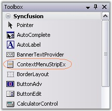
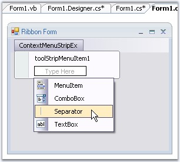
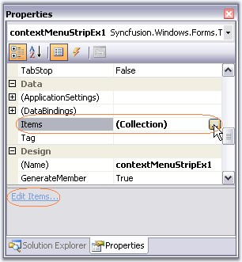
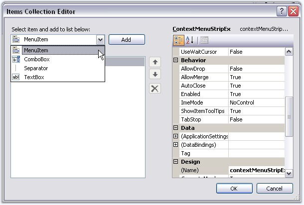
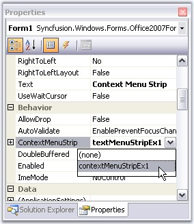
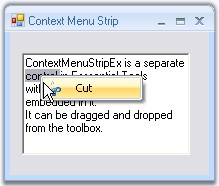

ContextMenuStripEx is a separate control in Essential Tools with advanced features embedded in it. It can be dragged and dropped from the toolbox.

Figure 1418: ContextMenuStripEx in the Toolbox
Creating ContextMenuStripEx
Through Designer
Drag and drop a ContextMenuStripEx to the form. Click "Type Here" to add the items. This displays a collection of menu items, using which user can add the menu items.

Figure 1419: Adding Menu Items Through Designer
Items can also be added using ContextMenuStripEx.Items property or Edit Items... command in the property grid.

Figure 1420: Options for Accessing Items Collection Editor through Item property or Edit Items... Command

Figure 1421: Adding Menu Items through Items Collection Editor in Designer
Through Code
The below code snippets adds a ToolStripItem (Cut) to the menu list.
|
[C#]
//Declaration private Syncfusion.Windows.Forms.Tools.ContextMenuStripEx EditorContextMenuStripEx; private System.Windows.Forms.ToolStripMenuItem toolStripMenuItem1;
//Initializing this.EditorContextMenuStripEx = new Syncfusion.Windows.Forms.Tools.ContextMenuStripEx();
//Assigning the ContextMenuStrip created this.richTextBox1.ContextMenuStrip = this.EditorContextMenuStripEx;
//Adding a menu item this.EditorContextMenuStripEx.Items.AddRange(new System.Windows.Forms.ToolStripItem[] {this.toolStripMenuItem1}); this.toolStripMenuItem1.Image = ((System.Drawing.Image)(resources.GetObject("toolStripMenuItem1.Image"))); this.toolStripMenuItem1.Text = "Cu&t";
this.EditorContextMenuStripEx.ResumeLayout(false); |
|
[VB.NET]
'Declaration Private EditorContextMenuStripEx As Syncfusion.Windows.Forms.Tools.ContextMenuStripEx Private toolStripMenuItem1 As System.Windows.Forms.ToolStripMenuItem
'Initializing Me.EditorContextMenuStripEx = New Syncfusion.Windows.Forms.Tools.ContextMenuStripEx
'Assigning the contextmenustrip created Me.richTextBox1.ContextMenuStrip = Me.EditorContextMenuStripEx
'Adding a menu item Me.EditorContextMenuStripEx.Items.AddRange(New System.Windows.Forms.ToolStripItem() {Me.toolStripMenuItem1}) Me.toolStripMenuItem1.Image = CType((Resources.GetObject("toolStripMenuItem1.Image")), System.Drawing.Image) Me.toolStripMenuItem1.Text = "Cu&t"
Me.EditorContextMenuStripEx.ResumeLayout(False) |
Associating the ContextMenuStrip to a control
This can be easily done by assigning the ContextMenuStripEx to the Control.ContextMenuStrip property.

Figure 1422: Associating ContextMenuStripEx to RichTextBox
|
[C#]
this.richTextBox1.ContextMenuStrip = this.contextMenuStripEx1; |
|
[VB.NET]
Me.richTextBox1.ContextMenuStrip = Me.contextMenuStripEx1 |
At Run time, when the user right clicks the control, menu items will be displayed like the below image.

Figure 1423: Context Menu displayed on a RichTextBox
Various Features and Customization options are discussed in the following topics.
· Style Settings
· Foreground Settings
· Margin and Shadow Settings
· RunTime Features
· RTL Support
· ToolStripItems
 Style Settings
Style Settings